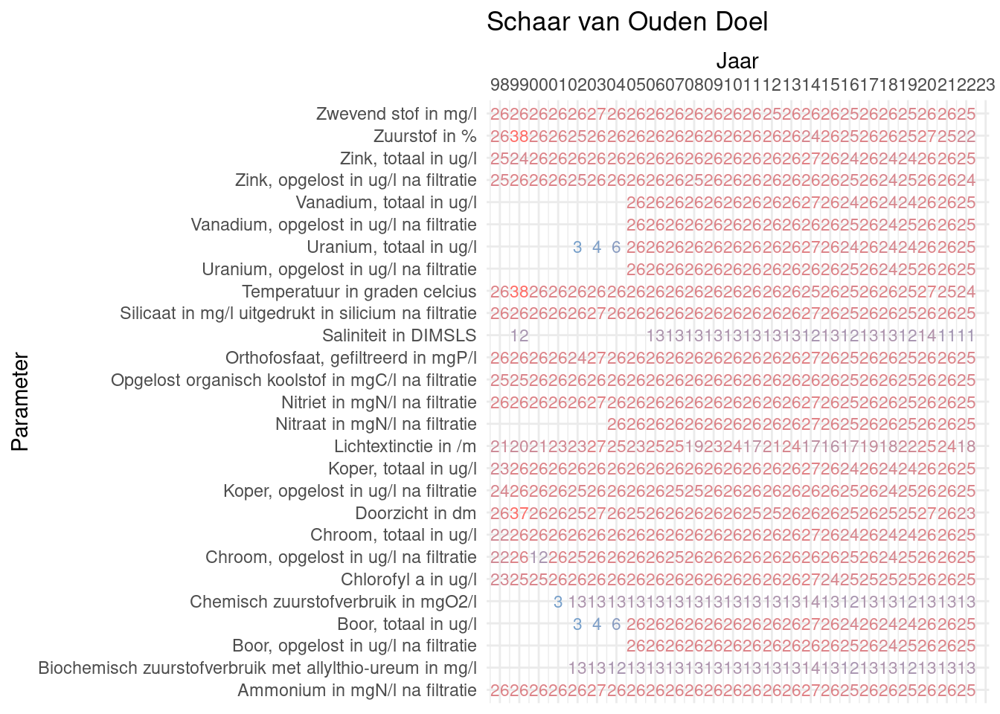
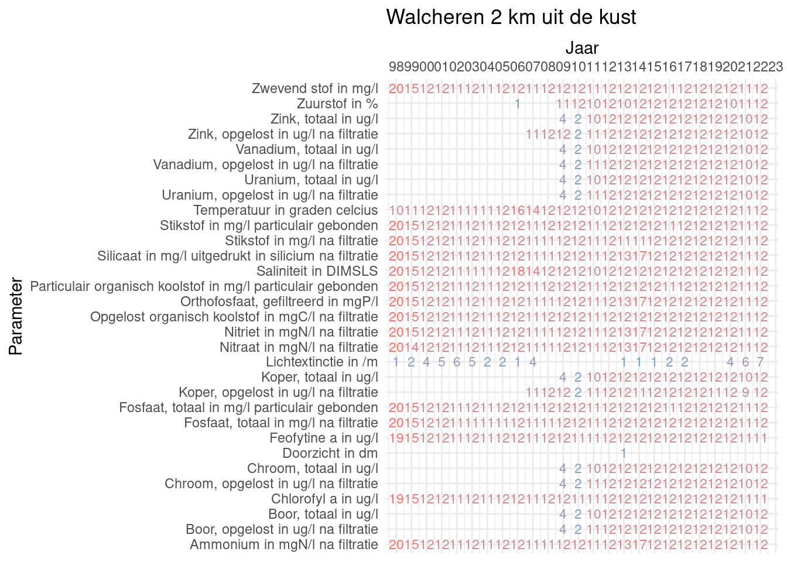
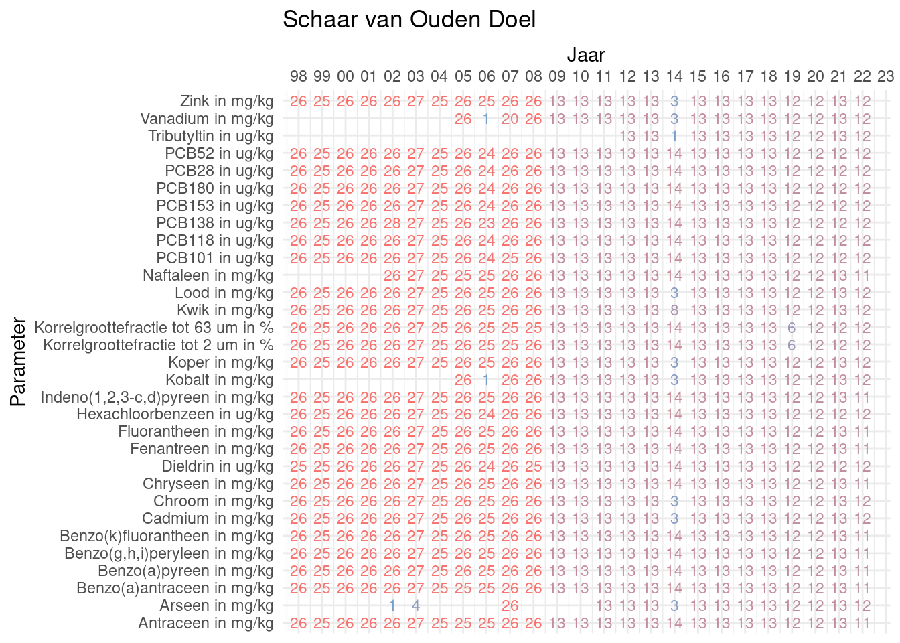
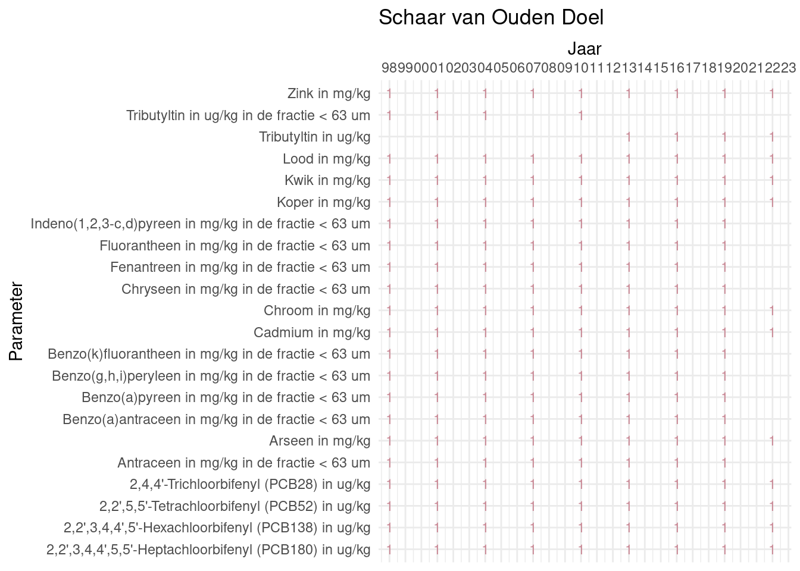
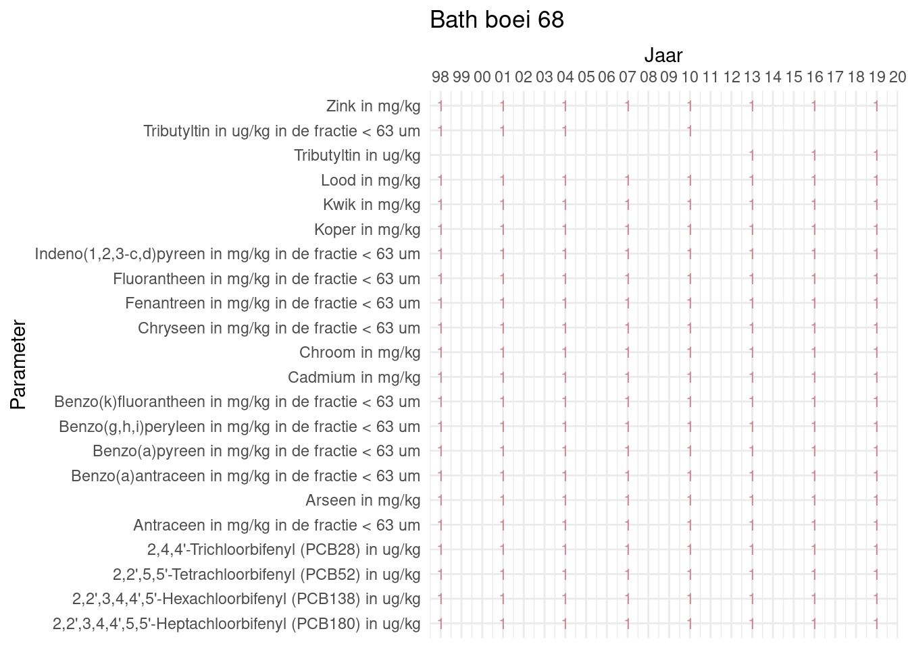
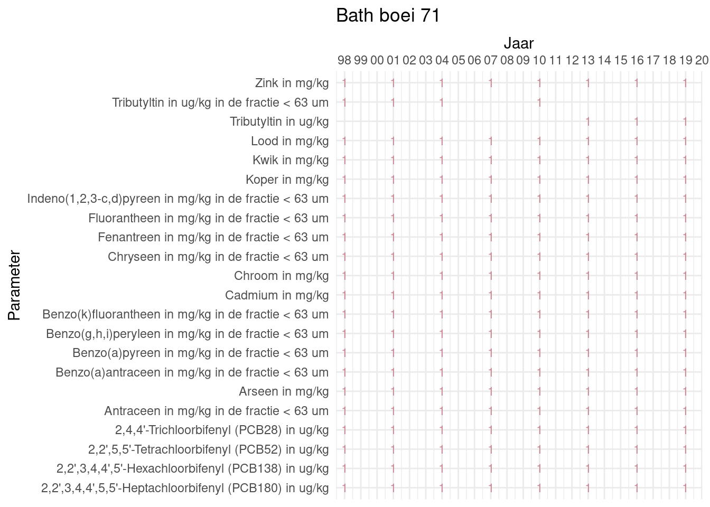
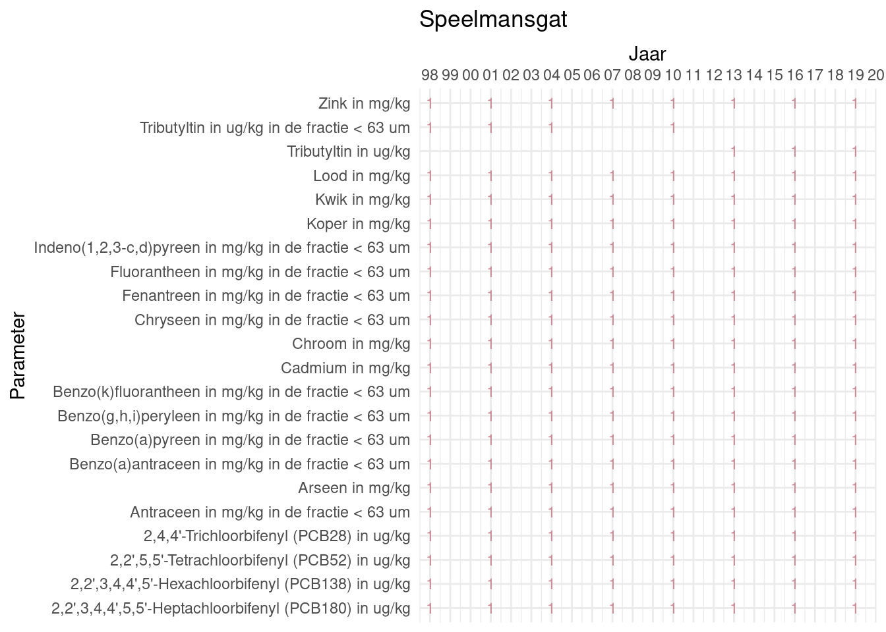
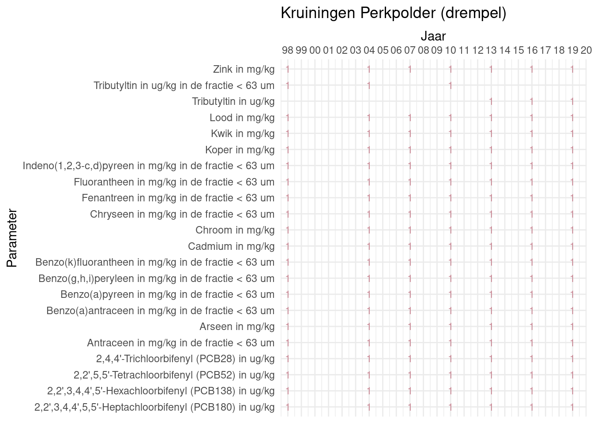
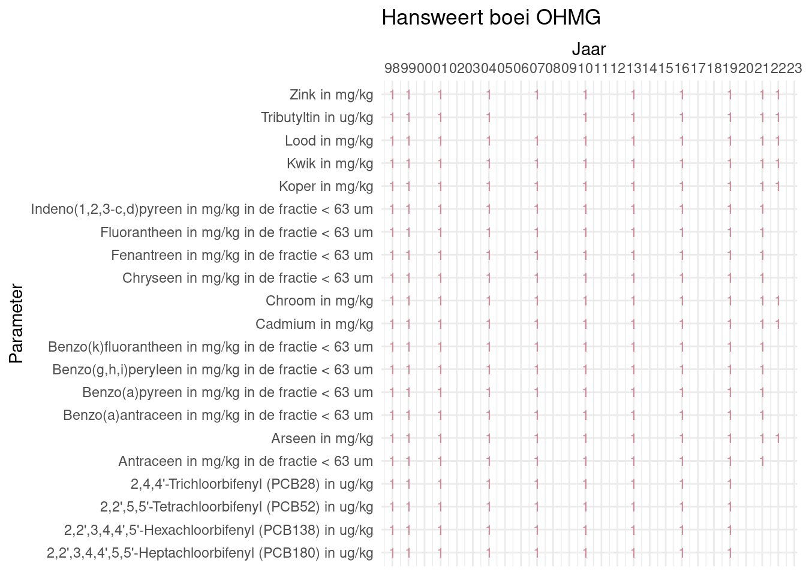
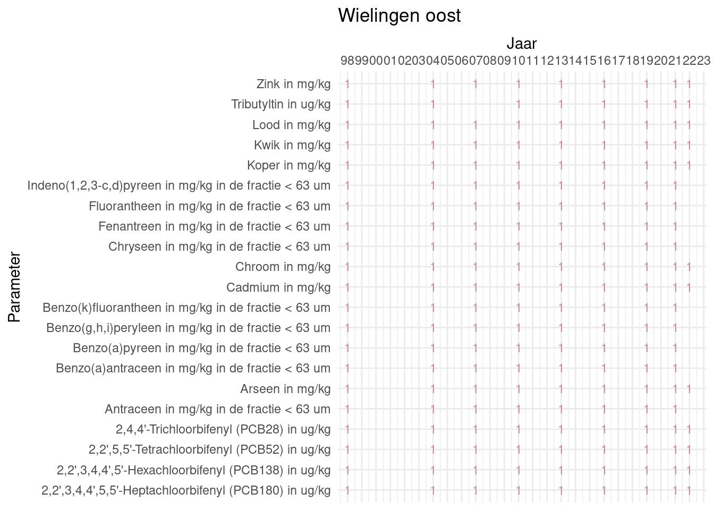

Meetdichtheidmatrices
De meetdichtheidsmatrices geven voor ieder jaar aan hoe vaak elke parameter is gemeten.
Oppervlaktewater
Schaar van Ouden Doel

Walcheren 2 km uit de kust

Walcheren 20 km uit de kust
Zwevende stof
Schaar van Ouden Doel

Bodem {BijlageB-meetdichtheid-bodem}







Biota
Informatie over de ophoping van stoffen in biota is niet meegenomen in deze rapportage
Stoffen in biota - overzicht van de metingen (naar bijlage)
overzicht overige parameters